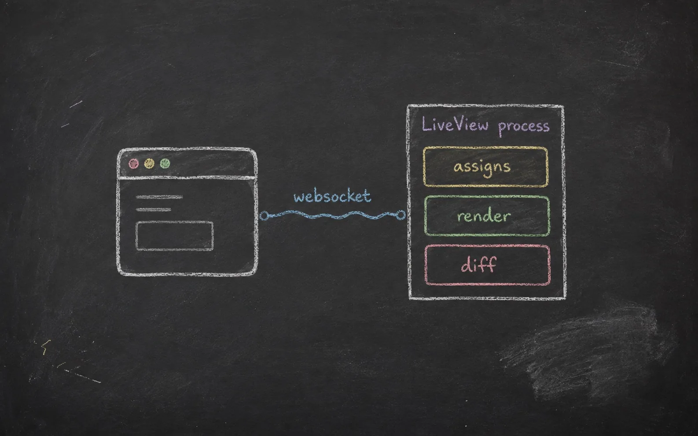

A build-it-one-commit-at-a-time tour of the runtime
Phoenix LiveView:
Internals
How a LiveView goes from an HTTP request to a living BEAM process — mount, diff, patch, and everything in between.

Chalk drawing on a dark slate board: white chalk linework with soft dusty edges, pastel chalk colors for emphasis, visible smudges and eraser ghosts. Hand-drawn and a little imperfect, as though sketched mid-lecture. Subject: a single labelled box titled "LiveView process" sitting on the right side of the board, connected by a hand-drawn wavy line labelled "websocket" to a simple browser-window sketch on the left. Inside the process box, three smaller chalk-sketched compartments stacked: "assigns", "render", "diff". A few loose chalk marks and an eraser smudge in a corner, as if just discussed. No baked-in title text beyond the small in-diagram labels described. Generous negative space, nothing crowding the edges. Target size ~1600×1000px, 16:10 landscape; compose for a small on-page figure with the subject centred and safe margins.
Generate this with your image agent, then drop the file here.
Contents
- 01The Lifecycle: From HTTP to Living ProcessStateless render, then the websocket upgrade — and why LiveView is really a process
- 02Router, Mount, and the Initial Rendermount/3, handle_params/3, render/1 — the backbone of every page
- 03Socket Assigns and State TransitionsWhy LiveView feels reactive, and what temporary assigns actually reset
- 04The Static/Dynamic Split and the Diff EngineHow HEEx compiles, what change tracking sees, and what defeats it
- 05Client Events, Server Messages, and Navigationhandle_event, handle_info, and the push_* family
- 06Async Work: Tasks, Results, and Failureassign_async, start_async, handle_async, and AsyncResult
- 07Hooks, on_mount, and Extension Pointsattach_hook, on_mount, and when to reach for a LiveComponent instead
- 08PubSub, Streams, and Cross-Process UpdatesBroadcasting between processes, and managing large collections without bloating state
- 09Uploads, Forms, and Browser Integrationallow_upload, live_file_input, and JS client hooks
- 10Security, Authorization, and ReconnectionUntrusted params, where to authorize, and what a dropped connection means
- ◊CheatsheetCallback signatures, the push_* family, and the diff rules on one page
Chapters 1–4 build the mental model — process, lifecycle, state, diff. 5–9 are the mechanics you reach for daily. 10 closes with the rule that governs everything before it: nothing from the client is trusted until you say so. Arrow keys turn pages, ↑ returns here.